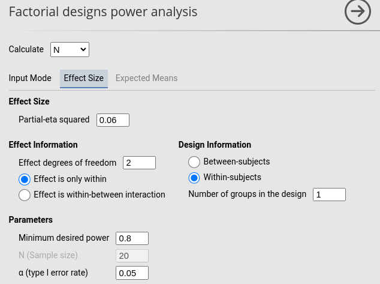
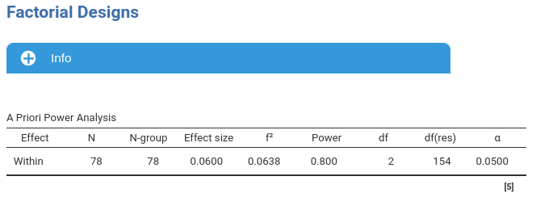
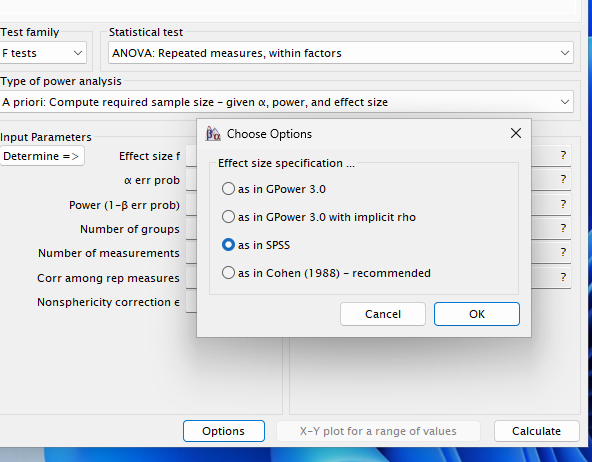
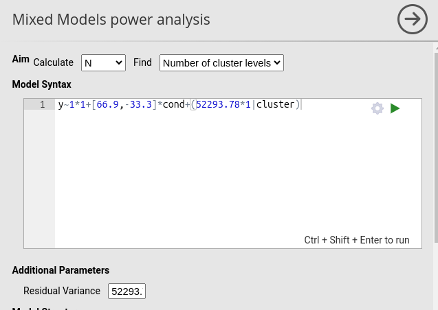
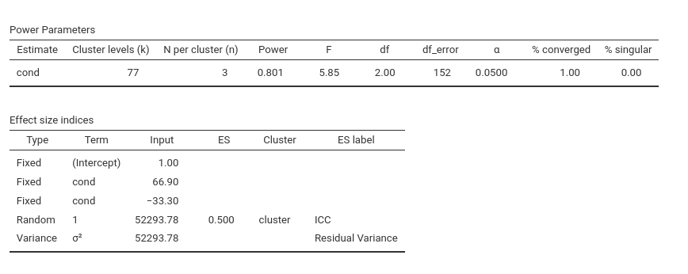

Repeated Measures: software inconsistency
0.8.0
Different software packages often return different results for repeated-measures ANOVA power analysis, even when all input parameters appear identical. In this document we inspect this issue by comparing PAMLj, the R pwr package, **G*Power, WebPower**, and the Superpower R package.
The issue
Consider a one-way repeated-measures design with three levels.
Suppose we expect the effect to explain approximately 5% of the
variance, that is, partial eta-squared \(\eta_p^2 = .05\). Using this value in PAMLj yields a required sample size of
N = 94 for .80 power. Reproducing the same setup with
pwr::pwr.f2.test() yields essentially identical results.
Testing the scenario with Superpower::ANOVA_exact() at
\(N=94\) also returns a power estimate
of .80.
However:
- GPower (default F-tests* settings) returns N =
33.
- WebPower returns N = 185.
- G*Power using the option “as in Cohen (1988)” also
returns N = 185.
- G*Power using “as in SPSS” returns N = 95, consistent with PAMLj.
These discrepancies are too large to be explained by rounding. All software is, in fact, internally consistent — the differences arise from different interpretations of the effect size, the residual variance, and the noncentrality parameter. Unfortunately, these differences are subtle and grounded in technical details. To keep the discussion coherent, we frame repeated-measures ANOVA as a special case of a random-intercept linear model, and dive into statistical definitions and details.
If you find this discussion boring or not necessary, please visit Repeated Measures: software inconsistency (Practitioner Version), for a more practical digest (in reality I asked chatgpt to make a short recap of this :-)).
Some theory
A repeated-measures ANOVA can be expressed as a random-intercept model (Raudenbush & Bryk, 2002; McCulloch, Searle & Neuhaus, 2008):
\[ Y_{ij} = \alpha + \alpha_i + \mu_j + \varepsilon_{ij}, \]
where \(i\) indexes subjects and \(j = 1,\dots,k\) indexes repeated measurements. The subject-specific intercepts \(\alpha_i\) have variance \(\tau^2\), the condition means have variance \(\sigma_m^2\), and the within-subject residuals have variance \(\sigma^2\).
In this model, the total variance is: \[ \sigma_t^2 = \sigma_m^2 + \tau^2 + \sigma^2. \]
And the repeated measure wull be correlated. The correlation among repeated measures is: \[ r = \frac{\tau^2}{\tau^2 + \sigma^2}. \]
If we now define the variance unrelated to the effect as: \[ \sigma_{\text{res}}^2 = \tau^2 + \sigma^2. \]
we can find \(\sigma^2\) by solving for it the equation above: \[ \sigma^2 = \sigma_{\text{res}}^2 (1 - r). \]
We will see later how this definition is treated differently across software systems.
Power analysis
All software systems ultimately rely on the effect size \(f\), defined as (Cohen, 1988) as the square-root of:
\[ f^2 = \frac{\sigma_m^2}{\sigma^2}. \]
This relates to partial eta-squared via:
\[ \eta_p^2 = \frac{\sigma_m^2}{\sigma_m^2 + \sigma^2} = \frac{f^2}{1 + f^2}. \]
However, these relationships refer to population variances, not to expected sample sums of squares. When data are sampled, the expected sums of squares for a repeated-measures design are:
\[ E[SS_e] = N(k-1)\sigma^2,\qquad E[SS_m] = N\sigma_m^2. \]
Hence:
\[ \hat{f}^2 = \frac{\sigma_m^2}{(k-1)\sigma^2},\qquad \hat{\eta}_p^2 = \frac{\sigma_m^2}{\sigma_m^2 + (k-1)\sigma^2}. \]
These are the actual effect sizes relevant for power analysis in a design with \(k\) repeated measures.
Power calculations require also a noncentral F distribution with
- \(df_1 = k - 1\)
- \(df_2 = (N - 1)(k - 1)\)
- noncentrality parameter \(\lambda\)
A general form is:
\[ \lambda = N_f \cdot f^2, \]
The noncentraly parameter is the actual effect size used to obtain the power parameters in the analysis, so it is crucuial that it is well defined. \(N_f\) is a sample-size-related quantity. Its definition differs across software and explains most inconsistencies.
Approach 1 (PAMLj, GPower with SPSS option, pwr, Superpower)
Here \(N_f = N(k - 1)\) or, equivalently, \((N-1)(k-1)\). Then:
\[ \lambda_1 = N(k-1)\frac{\sigma_m^2}{(k-1)\sigma^2} = N\frac{\sigma_m^2}{\sigma^2}. \]
Software using this approach:
- (PAMLj)
- Superpower::ANOVA_exact()
- pwr.f2.test()
G*Powerwith option “As in SPSS”
This approach aligns with the classical GLM definition of \(f^2\) and with the interpretation of partial eta-squared used in standard ANOVA.
Approach 2 (WebPower, G*Power default “as in Cohen”)
A second approach defines:
\[ f_v^2 = \frac{\sigma_m^2}{\sigma^2}, \]
but sets \(N_f = N\). Thus:
\[ \lambda_2 = N \cdot \frac{\sigma_m^2}{\sigma^2}. \]
This superficially resembles \(\lambda_1\), but notice that approach 1 uses:
\[ f^2 = \frac{\sigma_m^2}{(k-1)\sigma^2}, \]
so:
\[ f_v^2 = f^2 (k-1). \]
Thus, entering the same numerical value leads to entirely different noncentrality parameters:
- Approach 1: \(\lambda_1 =
N(k-1)f^2\)
- Approach 2: \(\lambda_2 = Nf^2\)
For \(k = 4\), \(\lambda_1 = 3Nf^2\), three times larger than \(lambda_2\).
The expected partial eta-squared under approach 2 becomes:
\[ \eta_{pv}^2 = \frac{f^2}{f^2 + (k-1)}. \]
This means that in a design with four measures, an expected \(f_v^2 = .10\) produces \(\eta_{pv}^2 \approx .06\), not .16 as one would expect.
Software using this approach:
- WebPower
G*Power(option “as in Cohen (1988)”)
This effect size is dimensionless and implicitly treats the design as if it had only two levels.
Which one is correct?
It depends on what the user wants to express:
- If expectations are framed in terms of partial
eta-squared or variance explained, Approach 1
is appropriate.
- If the user intentionally adopts Cohen’s definition of \(f_v^2\), then Approach 2 is correct, but its interpretation differs substantially from the usual ANOVA effect sizes.
In my opinion, approach 1 is typically more transparent and aligns with standard GLM practice, but users may have good reason to prefer the second approach.
Practical comparisons
Even when software appears to use the same effect size, differences in the underlying definition lead to different required sample sizes. Below we verify these differences empirically.
Effect size indices
As a working example for a three-level repeated-measures design, we define means, SD, and correlations that yield \(f \approx 0.25\) and \(\eta_p^2 \approx 0.06\), values typical in applications.
### expected means
mu = c(100, 0, 0)
## expected sd
sd <- 323.4
### expected average correlations among repeated measures
r <- .50
## number of repeated measures
k <- 3
ESS_m<-sum((mu-mean(mu))^2)
ESS_e<-(k-1)*sd^2*(1-r)
f2<-ESS_m/ESS_e
f<-sqrt(f2)
# eta2p
eta2p<-f2/(1+f2)
sprintf("f=%.4f, f2=%.4f,eta2p=%.4f",sqrt(f2),f2,eta2p) ## [1] "f=0.2525, f2=0.0637,eta2p=0.0599"Setup
- Aim = N
- AXB \(p\eta^2\) = 0.06
- \(f\) = 0.2525
- Number of measures = 3
- Effect DF = 2
- Number of groups = 1
- Alpha = .05
- Required power = .80
PAMLj
The PAMLj setup is straightforward and produces the expected results.


G*Power
Use:
- F test → Repeated measures: within factors
- Effect size \(f = .2525\) or \(\eta_p^2 = .06\)
- In Options, select “As in SPSS”

Entering \(\eta_p^2 = .06\) yields N = 78, matching PAMLj.

Superpower
Because Superpower does not compute required N for
repeated measure designs, we can use it to verify that N =
78 indeed yields .80 power.
n<-78
string = "3w"
alpha_level <- 0.05
design_result <- Superpower::ANOVA_design(design = string,
n = n,
mu = mu,
sd = sd,
r = r, plot=FALSE)
exact_result <- Superpower::ANOVA_exact(design_result,
alpha_level = alpha_level,
verbose = FALSE)
zapsmall(exact_result$main_results)## power partial_eta_squared cohen_f non_centrality
## a 80.50476 0.06065 0.25411 9.94382Superpower also offers a simulation-based power estimate. This is a crucal test, because simulations do not require any definition of effect size: data are generated based on the input means, SD and correlation, and the power is computed as a proportion of the simulation run that produced a significant result.
sim_result <- Superpower::ANOVA_power(design_result,
alpha_level = alpha_level,
nsims = 1000,
verbose = FALSE)## power effect_size
## anova_a 79.7 0.0707Simulation results are fully consistent with PAMLj and in general with software using approach 1.
WebPower & GPower (Cohen option)
Running WebPower with the parameters set above, we have:
## Repeated-measures ANOVA analysis
##
## n f ng nm nscor alpha power
## 152.6532 0.2524727 1 3 1 0.05 0.8
##
## NOTE: Power analysis for within-effect test
## URL: http://psychstat.org/rmanovaThis yields N = 153, identical to G*Power using the Cohen option.


As shown above, this difference with PAMLj is expected: these programs use Approach 2. To match Approach 1, we need to rescale the effect size:
## [1] 0.1274849## Repeated-measures ANOVA analysis
##
## n f ng nm nscor alpha power
## 77.08301 0.3570503 1 3 1 0.05 0.8
##
## NOTE: Power analysis for within-effect test
## URL: http://psychstat.org/rmanovaThis now reproduces the PAMLj results.
A final test: Mixed models
Given that repeated-measures ANOVA is a special case of a random-intercept model, the mixed-model power analysis in PAMLj should produce nearly identical results. So, we convert the RM ANOVA scenario into a random-coefficients model (see Mixed models for details of mixed model power analysis).
Contrast coefficients (deviation-coded):
## [1] "b1=66.67, b2=-33.33"Residual variance:
## [1] "sigma=52293.78"Random-intercept variance:
\[ \tau^2 = \frac{r}{1-r}\sigma^2 \]
## [1] "tau2=52293.78"Using these parameters in the mixed-model power analysis gives:



The required sample size is N = 77, exactly equivalent to the RM ANOVA result (differences due to simulation noise).
A note on the correlation among measures
As shown earlier, all methods implicitly include the correlation between repeated measures in the definition of the effect size. GPower allows users to manually enter a correlation, but this assumes an effect-size definition not* already incorporating it. Unless the user understands this distinction, supplying a correlation can double-count or distort the effect size.
Comments?
Got comments, issues or spotted a bug? Please open an issue on PAMLj at github or send me an email